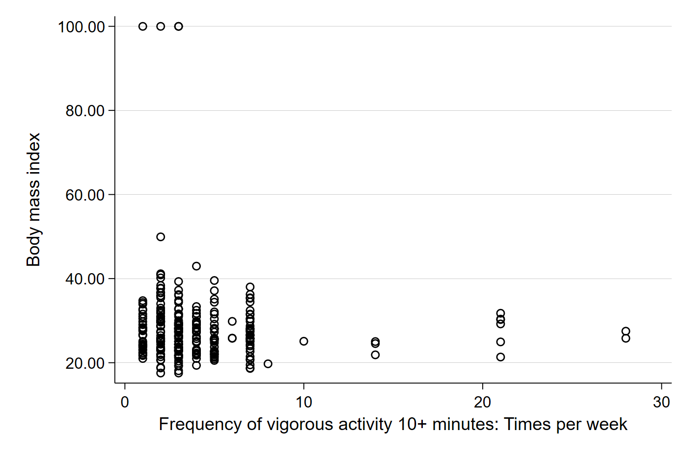
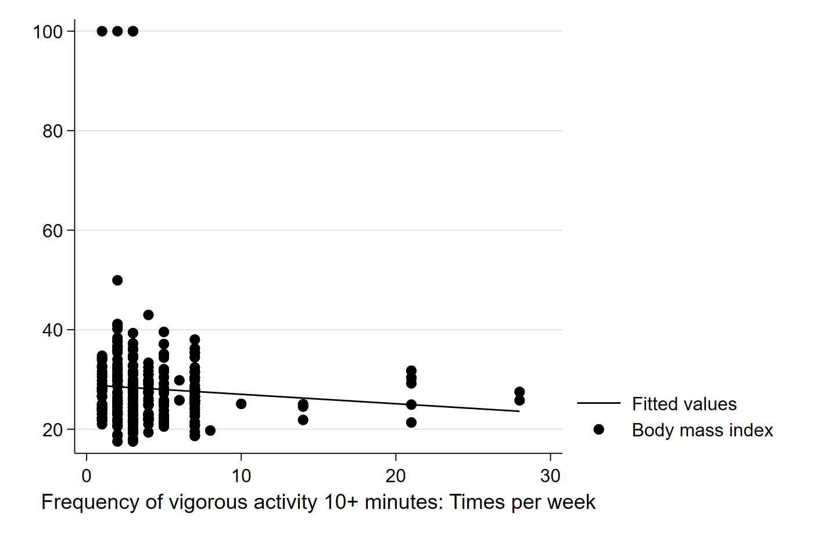
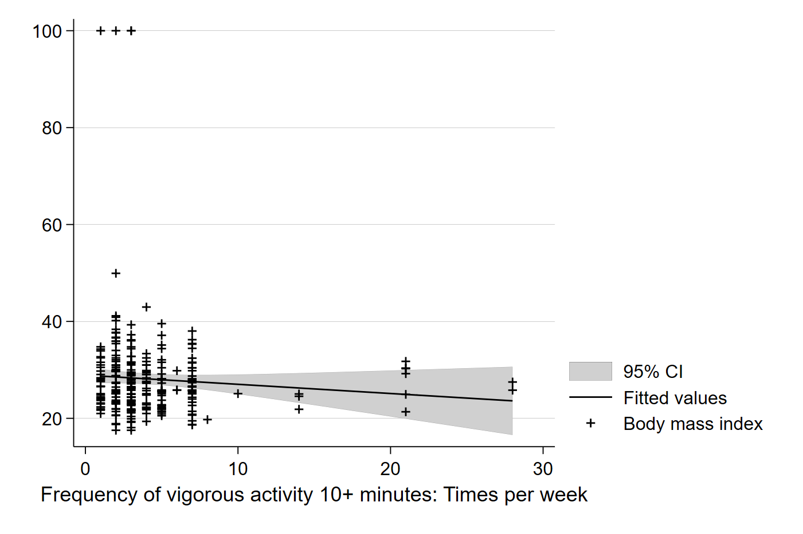

Lab 6 - Hypothesis Tests and Models
Overview
In this lab, we will go over the basics of hypothesis testing and simple regression models in Stata. The data we will use in this lab comes from the National Health Interview Survey (NHIS) and the Tennessee STAR project. The data can be downloaded here.
Estimating Summary Statistics
In order to illustrate the process and usefulness of two sample hypothesis tests, we will use the STAR project data. The STAR project was a study conducted in Tennessee schools that aimed to measure the efficacy of small classrooms and teaching aides in improving educational outcomes for students. The researchers measured the effects by randomly assigning students to small classrooms (a “treatment”), regular classrooms with a teacher’s aide (another “treatment”), and regular classrooms (a “control” group). The setup of the STAR project, interested in isolating the effects of a policy or program, draws on the gold standard of research designs: randomized control trials (RCT).
Whenever analysts would like to know the causal relationship between an action or intervention and a policy-relevant outcome, they want be able to simultaneously observe outcomes in a world where the action was taken and a world without the action. Of course, such observation is impossible, so analysts compare groups exposed to an action (i.e., a “treatment” group) to groups not exposed to the action (i.e., a “control” group) to make inferences about the effects of the action. When assignment to treatment and control group is not random, a potential worry is that the two groups differ in ways besides exposure to the treatment. For instance, perhaps a larger share of the treatment group has more highly motivated students; thus, the treatment and control group would differ in both motivation and exposure to the treatment, leaving the analyst to wonder which actually caused the difference in outcomes between treatment and control groups. However, in the STAR project (and RCTs more generally), since the sample of students was both large and random, and assignment to each group was also random, the treatment and control groups, on average, are unlikely to differ substantially in ways besides their exposure to the treatment.
For our purposes in this exercise, the STAR data has been restricted only to students with non-missing data and who received either the small classroom treatment for all four years of the study (kindergarten through 3rd grade) or the regular classroom control status for all four years of the study. Let’s begin with a quick comparison of the characteristics of the treatment and control groups, defined by the indicator variable treatment_four. The variable treatment_four takes on a value of 1 a student is in the treatment group and 0 if a student is in the control group. Things like teacher’s characteristics in kindergarten and students demographic and socioeconomic characteristics can give us some indication that the treatment and control groups are similar in their observable characteristics. By comparing the average characteristics of the two groups, we are performing a simplified version of what is called a “balance test.” Such a test can tell us if our treatment and control group differs, on average, in some important way besides their treatment status. We’ll do this by summarizing the observable variables for each group:
sum twhite tblack tadvanced_degree frpl speced smale swhite sblack sasian shisp snative sother if treatment_four == 1
sum twhite tblack tadvanced_degree frpl speced smale swhite sblack sasian shisp snative sother if treatment_four == 0In the above code, I am telling Stata to calculate summary statistics for the treatment group and control group on the list of variables I have included. The variables are teachers’ race, gender, and whether they have an advanced degree and students’ race, gender, free or reduced-price lunch eligibility, and special education status. Generally, the proportions of these characteristics should be about equal between treatment and control groups. Let’s see how things look.
. sum twhite tblack tadvanced_degree frpl speced smale swhite sblack sasian shisp snative sother if treatment_four == 1
Variable | Obs Mean Std. dev. Min Max
-------------+---------------------------------------------------------
twhite | 357 .9439776 .2302878 0 1
tblack | 357 .0560224 .2302878 0 1
tadvanced_~e | 357 .3753501 .4848928 0 1
frpl | 357 .280112 .449684 0 1
speced | 357 .0168067 .1287271 0 1
-------------+---------------------------------------------------------
smale | 357 .4565826 .4988105 0 1
swhite | 357 .8235294 .3817551 0 1
sblack | 357 .1680672 .3744508 0 1
sasian | 357 .0028011 .0529256 0 1
shisp | 357 .0028011 .0529256 0 1
-------------+---------------------------------------------------------
snative | 357 0 0 0 0
sother | 357 .0028011 .0529256 0 1
.
. sum twhite tblack tadvanced_degree frpl speced smale swhite sblack sasian shisp snative sother if treatment_four == 0
Variable | Obs Mean Std. dev. Min Max
-------------+---------------------------------------------------------
twhite | 143 .951049 .2165241 0 1
tblack | 143 .048951 .2165241 0 1
tadvanced_~e | 143 .3706294 .484671 0 1
frpl | 143 .2307692 .422806 0 1
speced | 143 .048951 .2165241 0 1
-------------+---------------------------------------------------------
smale | 143 .4055944 .4927326 0 1
swhite | 143 .8741259 .3328734 0 1
sblack | 143 .1188811 .3247862 0 1
sasian | 143 .006993 .0836242 0 1
shisp | 143 0 0 0 0
-------------+---------------------------------------------------------
snative | 143 0 0 0 0
sother | 143 0 0 0 0Comparing the two, it looks like the two groups enter kindergarten facing strikingly similar teachers: about the same proportion of the treatment and control group have white teachers, black teachers, and teachers with advanced degrees in kindergarten. However, the treatment group appears to have a slightly higher proportion of boys, lower proportion of white students, and higher proportion of black students. This could be due to random sampling noise or due to the way I constructed the sub-sample, which diverges from the way the study was designed and carried out.
The STAR project collected data on a wide range of educational outcomes at the end of each academic year, including standardized scores on the major subjects. We will focus on reading test scores for this exercise. Let’s start by simply summarizing kindergarten reading test scores, the first year of the study, for each group. Here, we will introduce sorting data and the by variable: preface:
sort treatment_four
by treatment_four: sum read_kSetting Up a T-test By Hand
The sort command tells Stata to reorganize the observations according to the values of the variable specified, in this case treatment_four. Since treatment_four has two values, 0 and 1, Stata reorganizes the data to put all the zeroes (i.e., the control group) on top and all the ones (i.e., the treatment group) on the bottom. The second command tells Stata to summarize the reading scores for each group separately. The output will look like:
. by treatment_four: sum read_k
--------------------------------------------------------------------------------------------------------------------------------------------------------------
-> treatment_four = 0
Variable | Obs Mean Std. dev. Min Max
-------------+---------------------------------------------------------
read_k | 143 439.3986 25.9976 384 518
--------------------------------------------------------------------------------------------------------------------------------------------------------------
-> treatment_four = 1
Variable | Obs Mean Std. dev. Min Max
-------------+---------------------------------------------------------
read_k | 357 453.8515 34.48812 386 605Comparing the average reading scores of the treatment and control groups, we can see that the treatment group has, on average, higher reading scores at the end of the first year of the study. At least superficially, it looks like students in small classrooms who can theoretically receive more attention from less stressed teachers score about 14 points higher on reading tests than their counterparts in regular classrooms one year into the study. It is possible, however, that the gap we see is attributable to sampling noise or error and different samples would find no difference between the two groups. Since policy changes and public resources might depend on getting this right, we want to rule out this possibility using a two sample hypothesis test against the null hypothesis that the difference between the treatment and control group is really zero. Of course, with the summary statistics for both samples, we already have everything we need to conduct a two sample t-test by hand using our handy formula for a two sample t-statistic:
\[ t = \dfrac{(\overline{X_1} - \overline{X_2})}{\sqrt{\frac{s_1^{2}}{n_1}+\frac{s_2^{2}}{n_2}}} \]
Plugging in the mean and standard deviation we have from our summary statistics for each sample, we can calculate a t-score:
\[ \dfrac{(439.40 - 453.85)}{\sqrt{\frac{26^{2}}{143}+\frac{34.49^{2}}{357}}} \rightarrow \dfrac{-14.45}{\sqrt{\frac{676}{143}+\frac{1189.56}{357}}} \rightarrow \dfrac{-14.45}{\sqrt{4.73+3.33}} \rightarrow \dfrac{-14.45}{2.84} \rightarrow t = -5.09 \]
Note that there was a lot of rounding to two decimal points in my calculation, but the t-score of -5.09 will be a reasonably close approximation of what we would find using more precise calculations. Now, we know that our conventional threshold for alpha to determine statistical significance is 0.05.Our last step will be to use our t-score and degrees of freedom to find our p-value. For our purposes, we will use the smaller degrees of freedom from the two samples, in this case df = 142. To calculate the p-value, we will again turn to Stata and use the display command to estimate the p-value. Here, the command will take the form of display 2*ttail(df, t) where we enter our degrees of freedom and the absolute value of our t-score in place of df and t respectively. Thus, the code is:
. display 2*ttail(142, 5.09)
1.117e-06As we can see, our p-value of 0.0000001117 is much lower than the alpha threshold of 0.05. We can therefore confidently reject the null hypothesis that the difference between the treatment and control group is actually 0. More specifically, if the underlying population actually had 0 difference between small and regular classroom students’ reading scores, 99.99 percent of samples would have a difference smaller than the one observed in our sample. In short, it would be extremely unlikely for two samples of this size to have a gap in scores this large if there was no gap in the broader population.
Two-sample T-test in Stata
That was quite a bit of work, however, and we know Stata can be useful for simplifying our work. We can use the ttest command with the , by() option to have Stata run a two sample t-test for us. The full command is:
test read_k, by(treatment_four)and the output will look like this:
. ttest read_k, by(treatment_four)
Two-sample t test with equal variances
------------------------------------------------------------------------------
Group | Obs Mean Std. err. Std. dev. [95% conf. interval]
---------+--------------------------------------------------------------------
0 | 143 439.3986 2.174029 25.9976 435.101 443.6962
1 | 357 453.8515 1.825305 34.48812 450.2618 457.4413
---------+--------------------------------------------------------------------
Combined | 500 449.718 1.472172 32.91878 446.8256 452.6104
---------+--------------------------------------------------------------------
diff | -14.45294 3.196126 -20.73249 -8.173385
------------------------------------------------------------------------------
diff = mean(0) - mean(1) t = -4.5220
H0: diff = 0 Degrees of freedom = 498
Ha: diff < 0 Ha: diff != 0 Ha: diff > 0
Pr(T < t) = 0.0000 Pr(|T| > |t|) = 0.0000 Pr(T > t) = 1.0000Here, we can see 1) a summary of both samples separately, 2) a summary of the samples combined, 3) a summary of the difference between the samples, and 4) the null hypothesis tested and test statistics used to test it. Note that the t-statistics looks a little different from ours. This is because Stata uses a more sophisticated way to account for degrees of freedom in two samples, one that will rarely lead to a large enough difference in t-scores to affect hypothesis testing and statistical inference. We can see that the two tailed t-test, and associated p-value, is 0.0000. In other words, it is just as small as the p-value we calculated when we calculated the t-score by hand. Also notice that the 95% Confidence Interval of the difference between the two samples (in the fourth row of the table) does not include zero. This tells us that in 95% of samples of this size, we would not see a difference between treatment and control group test scores of 0. Again, this simply provides us with another way of thinking about how confident we are in the results of our study.
If we were advising policy-makers, we could confidently suggest that small class sizes will increase average reading test scores, particularly since students were randomly assigned to the treatment status. We will not always have samples so cleanly assigned, however, and, in many cases, we will need to account for other differences between the two groups to get more reliable estimates of differences statistical inference.
Simple Linear Regression
To illustrate the concepts and uses of linear regression for analysis, we will be using data from the National Health Interview Survey (NHIS), which is an annual survey of a nationally representative sample of the U.S. population and asks a host of questions about health and health related behaviors and programs. For our example of a simple linear regression, we will be looking at one relationship that we theorize exists in the world to test hypotheses about these relationships. We will look at the relationship between body mass index (BMI) and exercise frequency. BMI is a proxy measure of obesity and scores outside the healthy range of 18 to 22 or so can suggest an increased risk of diseases like diabetes. For regression analysis, we assume that there is a linear relationship in the population:
\[ BMI_i = \beta_0 + \beta_1 Exercise_i + \varepsilon_i \]
where every additional period of exercise a person i engages in will yield a change of BMI equal to \(\beta_1\).
Continuous Outcome and Continuous Independent Variable
Beginning with our first model, the link between BMI and exercise, we have a theory that the relationship in the population looks like:
\[ BMI_i = \beta_0 + \beta_1 Exercise_i + \varepsilon_i \]
We have a simple random sample of 300 people from the NHIS. We want to know i) the size of \(\beta_1\) and ii) the direction of \(\beta_1\). In a linear regression world, we will always adopt a null hypothesis that our independent variable, x, is unrelated to our outcome, y, or, put another way, that \(\beta_1\) equals 0.
Let’s begin by looking at a scatter plot of exercise and BMI from our sample. Remember that in Stata, the dependent variable (Y) always comes first in the code.
scatter bmi vig10fwkWe should get something like: 
Visually, we can kind of see a small negative direction in the data. The dots farther out in the x-axis seem to be lower on the y-axis, which suggests that those who exercise more have a lower BMI. Importantly, each plot point represents the observed BMI (\(Y_i\)) and observed exercise frequency (\(X_i\)) for each individual in our sample. Let’s add the best fit line to better see the relationship in our sample.
graph twoway (lfit bmi vig10fwk) (scatter bmi vig10fwk)The above code uses the two-way graphing function in Stata, a powerful tool that can be used for generating all kinds of interesting graphs and plots. In this case, we are telling Stata to graph and best fit line of these two variables (BMI and exercise frequency) and impose it on a scatter plot of the two variables. It should generate a graph like this:

Here, Stata has calculated the best fit line for us, and does seem to suggest that more exercise is associated with a slightly lower BMI. Note that calculating the best fit line ourselves would involve first calculating the slope:
\[ \beta_1 = \dfrac{\sum (x_i - \overline{X})(y_i - \overline{Y})}{\sum (x_i - \overline{X})^2} \]
…and then using the basic form of a line to calculate the intercept:
\[ \beta_0 = \overline{Y} - \beta_1 \overline{X} \]
Now, we know our line is just based on a sample and could be incorrect due to sampling error. We can also have Stata add the confidence interval of the line to see the range in which we can be 95% confident the true population relationship between BMI and exercise rests:
graph twoway (lfitci bmi vig10fwk) (scatter bmi vig10fwk)Simply adding ci to the lfit command will tell Stata to include confidence intervals in the graph of the best fit line. The default in Stata is 95% C.I.’s, but you can use options to change the default. 
We can see the confidence interval plotted in the lighter grey area, which captures the confidence interval in our estimated value of Y (here, BMI) for each value of X (here, number of exercise periods per week). Note that each point on the line has a specific BMI value, \(\hat{Y_i}\), which is the predicted value of BMI for each number of exercises per week based on our sample.
As always, we want something more precise than an eyeball guess at a graph. Moreover, we might have an even harder time reading a graph if the sample is larger than 300. For that reason, we use our data to estimate the exact value of the slope and estimate a standard error that we can use for inference. Doing this in Stata is simple:
reg bmi vig10fwk…and your output will look like:
. reg bmi vig10fwk
Source | SS df MS Number of obs = 300
-------------+---------------------------------- F(1, 298) = 1.63
Model | 154.191864 1 154.191864 Prob > F = 0.2022
Residual | 28127.7304 298 94.388357 R-squared = 0.0055
-------------+---------------------------------- Adj R-squared = 0.0021
Total | 28281.9223 299 94.5883687 Root MSE = 9.7154
------------------------------------------------------------------------------
bmi | Coefficient Std. err. t P>|t| [95% conf. interval]
-------------+----------------------------------------------------------------
vig10fwk | -.1895639 .1483147 -1.28 0.202 -.4814408 .1023129
_cons | 28.91761 .8364125 34.57 0.000 27.27159 30.56363
------------------------------------------------------------------------------In the top right corner of the output, we some information about our sample and some measures of our model’s fit with the data. Note that the R-squared in the output is the ratio of the sum of squared residuals of the model (SSM) to the sum of squared residuals in the sample (SST). This tells us that our model of BMI as a function of only exercise frequency explains about 0.55 percent of the variation of BMI observed in our sample. The top left corner provides the breakdown of the residuals in the sample and model. Note that dividing the Model SS by the Total SS will give you the same answer as the R-squared to the right.
Finally, the main event and exciting action is happening in the table at the bottom of the output. Here, each row represents all the estimates of a parameter in our model. In this simple case, we have one independent variable (exercise frequency) and the constant _cons in the output), which is the intercept of the model. Coefficient gives us our estimated coefficients (\(\beta_1\) for exercise and \(\beta_0\) for the intercept), Std. Err. provides the standard error associated with that estimated coefficient, t provides the calculated t-score associated with the estimated coefficient, P>|t| tells us the p-value associated with the t-score, and finally, 95% Conf. Interval is the 95% confidence interval for each estimate in the model. In short, Stata estimates all of the parameters that we need for statistical inference.
Here, the output tells us that each additional period of exercise per week that someone adds will, on average, decrease their BMI by about 0.19 points. However, the p-value is quite high (0.202) and the 95% confidence interval includes 0 as a possible value for the true \(\beta_1\) in the underlying population. Together, these estimates suggest we cannot confidently reject the null hypothesis that there is no statistically meaningful relationship between exercise frequency per week and BMI. Exercise may improve other measures of health, but it does not seem to impact BMI, at least not without accounting for other possible confounders. The low R-squared gives us a clue that there might be a lot of other things that affect BMI that we do not observe here. More research is needed to better understand BMI. (HOORAY!!)